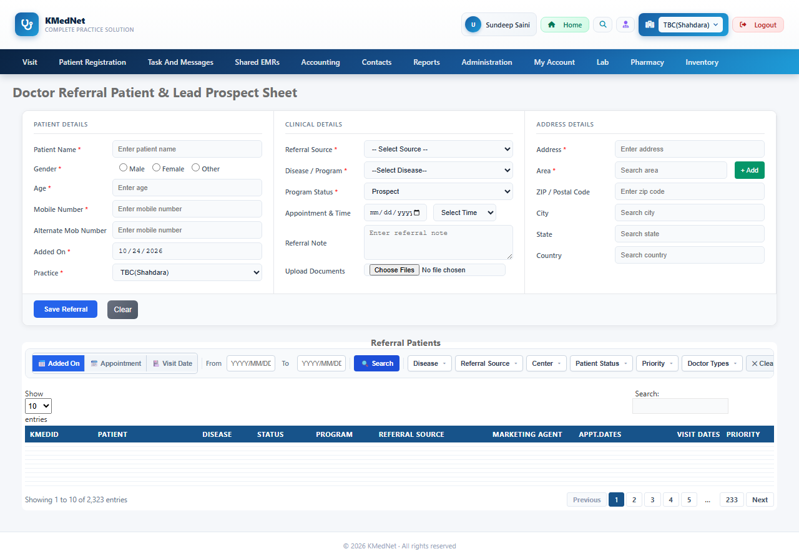

Total5
App defect2
Passed3
App defect The app did not do what its own validators/code say it should. Investigate the application.
Generation notes
- Rejected suggestion: "Search with valid date range" - step 2: 'filterFromDate' is disabled/read-only; step 3: 'filterToDate' is disabled/read-only
- Rejected suggestion: "Search with invalid date format" - step 2: 'filterFromDate' is disabled/read-only; step 3: 'filterToDate' is disabled/read-only
- Rejected suggestion: "Search with from date greater than to date" - step 2: 'filterFromDate' is disabled/read-only; step 3: 'filterToDate' is disabled/read-only
- Rejected suggestion: "Search with empty date fields" - step 2: 'filterFromDate' is disabled/read-only; step 3: 'filterToDate' is disabled/read-only
- Rejected suggestion: "Search with maximum date range" - step 2: 'filterFromDate' is disabled/read-only; step 3: 'filterToDate' is disabled/read-only
- TC_DRE_006: no provable expected result - runs as a smoke test (no crash / server error)
- TC_DRE_009: no provable expected result - runs as a smoke test (no crash / server error)
- TC_DRE_010: no provable expected result - runs as a smoke test (no crash / server error)
| ID | Scenario | Result | Reason | Time |
|---|---|---|---|---|
TC_DRE_007 | Search with invalid date format negative | App defect | Expected the message 'Invalid From Date format' but it never appeared. Pop-ups seen: ['Please select From date', "DataTables warning: table id=tblRecord - Requested unknown parameter '0' for row 0, column 0. For more information about this error, please see http://datatables.net/tn/4"]. | 6.33s |
Expected: message 'Invalid From Date format' appears; no server error Why this is expected: message_shown Steps:
Pop-ups shown by the app: Please select From date; DataTables warning: table id=tblRecord - Requested unknown parameter '0' for row 0, column 0. For more information about this error, please see http://datatables.net/tn/4; DataTables warning: table id=tblRecord - Requested unknown parameter '0' for row 0, column 0. For more information about this error, please see http://datatables.net/tn/4 test_library/reporting_doctorreferralentry/20261024_120033_test_search_button_for_grid/test_reporting_doctorreferralentry_20261024_120033.py::test_TC_DRE_007[chromium]  | ||||
TC_DRE_008 | Search with from date greater than to date negative | App defect | Expected the message 'From Date cannot be greater than To Date' but it never appeared. Pop-ups seen: ['Please select From date', "DataTables warning: table id=tblRecord - Requested unknown parameter '0' for row 0, column 0. For more information about this error, please see http://datatables.net/tn/4"]. | 6.16s |
Expected: message 'From Date cannot be greater than To Date' appears; no server error Why this is expected: message_shown Steps:
Pop-ups shown by the app: Please select From date; DataTables warning: table id=tblRecord - Requested unknown parameter '0' for row 0, column 0. For more information about this error, please see http://datatables.net/tn/4; DataTables warning: table id=tblRecord - Requested unknown parameter '0' for row 0, column 0. For more information about this error, please see http://datatables.net/tn/4 test_library/reporting_doctorreferralentry/20261024_120033_test_search_button_for_grid/test_reporting_doctorreferralentry_20261024_120033.py::test_TC_DRE_008[chromium]  | ||||
TC_DRE_006 | Search with valid date range smoke | Passed | — | 1.37s |
Expected: no server error Why this is expected: no_server_error Steps:
Pop-ups shown by the app: Please select From date test_library/reporting_doctorreferralentry/20261024_120033_test_search_button_for_grid/test_reporting_doctorreferralentry_20261024_120033.py::test_TC_DRE_006[chromium] | ||||
TC_DRE_009 | Search with empty date fields smoke | Passed | — | 1.08s |
Expected: no server error Why this is expected: no_server_error Steps:
Pop-ups shown by the app: Please select From date test_library/reporting_doctorreferralentry/20261024_120033_test_search_button_for_grid/test_reporting_doctorreferralentry_20261024_120033.py::test_TC_DRE_009[chromium] | ||||
TC_DRE_010 | Search with maximum date range smoke | Passed | — | 2.39s |
Expected: no server error Why this is expected: no_server_error Steps:
Pop-ups shown by the app: Please select From date; DataTables warning: table id=tblRecord - Requested unknown parameter '0' for row 0, column 0. For more information about this error, please see http://datatables.net/tn/4 test_library/reporting_doctorreferralentry/20261024_120033_test_search_button_for_grid/test_reporting_doctorreferralentry_20261024_120033.py::test_TC_DRE_010[chromium] | ||||